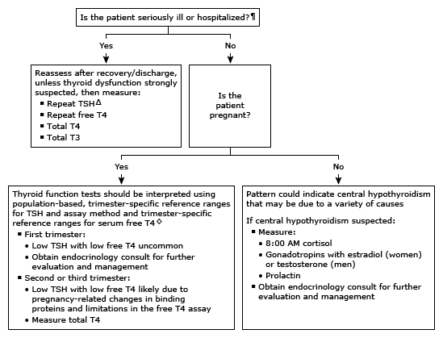

T3: triiodothyronine; T4: thyroxine; TSH: thyroid-stimulating hormone.
* The normal range for TSH in nonpregnant adults is approximately 0.5 to 4.5 mU/L, and for serum free T4, approximately 0.8 to 1.8 ng/dL (10.3 to 23.2 pmol/L). Interpretation of a specific abnormal test result should be based upon the reference range reported with that result.
¶ In general, TSH and free T4 should not be assessed in seriously ill patients unless there is a strong suspicion of thyroid dysfunction, since there are many other factors in acutely or chronically ill euthyroid patients that influence thyroid function tests.
Δ If measurement is necessary, TSH assays that have a detection limit of 0.01 mU/L should be used to assess thyroid function.
◊ Refer to UpToDate content on thyroid disease in pregnancy.